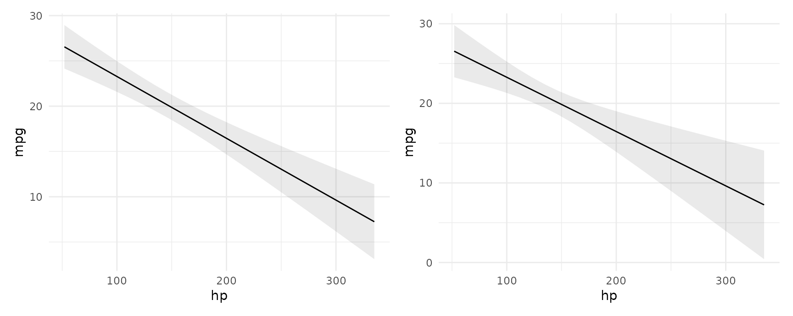

Some code in this vignette requires marginaleffects version 0.7.1 or the development version hosted on Github.
Delta Method
All the standard errors generated by the slopes(), comparisons(), and hypotheses() functions of this package package are estimated using the delta method. Mathematical treatments of this method can be found in most statistics textbooks and on Wikipedia. Roughly speaking, the delta method allows us to approximate the distribution of a smooth function of an asymptotically normal estimator.
Concretely, this allows us to generate standard errors around functions of a model’s coefficient estimates. Predictions, contrasts, marginal effects, and marginal means are functions of the coefficients, so we can use the delta method to estimate standard errors around all of those quantities. Since there are a lot of mathematical treatments available elsewhere, this vignette focuses on the “implementation” in marginaleffects.
Consider the case of the marginalmeans() function. When a user calls this function, they obtain a vector of marginal means. To estimate standard errors around this vector:
- Take the numerical derivative of the marginal means vector with respect to the first coefficient in the model:
- Compute marginal means with the original model: \(f(\beta)\)
- Increment the first (and only the first) coefficient held inside the model object by a small amount, and compute marginal means again: \(f(\beta+\varepsilon)\)
- Calculate: \(\frac{f(\beta+\varepsilon) - f(\beta)}{\varepsilon}\)
- Repeat step 1 for every coefficient in the model to construct a \(J\) matrix.
- Extract the variance-covariance matrix of the coefficient estimates: \(V\)
- Standard errors are the square root of the diagonal of \(JVJ'\)
The main function used to compute standard errors in marginaleffects is here: https://github.com/vincentarelbundock/marginaleffects/blob/main/R/get_se_delta.R
Standard errors and intervals for slopes() and comparisons()
All standard errors for the slopes() and comparisons() functions are computed using the delta method, as described above.
Standard errors and intervals for marginalmeans()
The marginalmeans() function can compute the confidence intervals in two ways. If the following conditions hold:
- The user set:
type = "response" - The “link” type is supported for this model class
- The
transform_postargument isNULL
then marginalmeans() will first compute the marginal means on the link scale, and then back transform them using the inverse link function supplied by insight::link_inverse(model) function.
In all other cases, standard errors are computed using the delta method as described above.
Standard errors and intervals for predictions()
The marginaleffects package handles all calculations to compute standard errors, t statistics, p values, and confidence intervals for contrasts (comparisons()), marginal effects (slopes()), and marginal means (marginalmeans()) functions.
When possible, however, the calculation of standard errors and confidence intervals for the output of predictions() is outsourced to the insight package. The benefit of this is that, for many popular models, insight can compute confidence intervals via back-transformation, which gives them certain nice properties. For example, this ensures that confidence intervals around the predictions of a logistic regression model will remain in between 0 and 1.
When insight does not support a model, marginaleffects computes standard errors using the delta method, as described above. In those cases, confidence intervals are not created automatically, but users can easily compute them manually, as usual, by multiplying the standard error by a critical value. The standard errors thus estimated have desirable properties under normal assumptions, but since there is no back-transformation, it is not always advisable to use them to construct symmetric confidence intervals around adjusted predictions.
One special case is when we use the the tidy() or summary() functions to compute average predictions, or the by argument to compute average predictions by group. In those cases, it may be a good idea to compute predicted values on the link scale, average the predictions, and only then back transform. This can be done using the transform_post and transform_avg arguments. In this example, we use the link_inverse argument from the insight package to get the inverse link function:
library(insight)
library(marginaleffects)
# simulate data
set.seed(1024)
N <- 25
dat <- data.frame(
y = rbinom(N, 1, prob = .9),
x = rnorm(N),
groupid = rbinom(N, 1, prob = .5))
# estimate model
mod <- glm(y ~ x + groupid, family = binomial, data = dat)
# average group-wise predictions
predictions(mod, by = "groupid")
#> type groupid predicted std.error statistic p.value conf.low conf.high
#> 1 response 1 0.8888889 0.10282561 8.644626 5.398200e-18 0.6873544 1.090423
#> 2 response 0 0.8750000 0.07697122 11.367885 6.043421e-30 0.7241392 1.025861Note that if we simply add 1.96*SE to the predictions, the upper bound of the confidence interval will exceed the logical limit of 1. Instead, one possibility would be to estimate the predicted values on the link scale, and then transform the results:
predictions(
mod,
by = "groupid",
type = "link",
transform_post = link_inverse(mod))
#> type groupid predicted p.value conf.low conf.high
#> 1 link 1 0.9135928 0.03809366 0.5323305 0.9899205
#> 2 link 0 0.9229036 0.02478264 0.5780974 0.9905287We can do something similar with average predictions using the tidy() or summary() functions:
p <- predictions(
mod,
type = "link")
summary(p, transform_avg = link_inverse(mod))
#> Effect Std. Error z Pr(>|z|) 2.5 % 97.5 %
#> 1 2.438 0.8895 2.741 0.0061301 0.6945 4.181
#>
#> Model type: glm
#> Prediction type: linkWarning: users should be aware that these alternative approaches will not in general yield the same results, because the mean of a transformation is not always equal to the transformation of the mean:
x <- rnorm(100)
mean(link_inverse(mod)(x))
#> [1] 0.4706487
link_inverse(mod)(mean(x))
#> [1] 0.4665151Bootstrap
It is easy to use the bootstrap as an alternative strategy to compute standard errors and confidence intervals. Several R packages can help us achieve this, including the long-established boot package:
library(boot)
set.seed(123)
bootfun <- function(data, indices, ...) {
d <- data[indices, ]
mod <- lm(mpg ~ am + hp + factor(cyl), data = d)
cmp <- comparisons(mod, newdata = d, vcov = FALSE, variables = "am")
tidy(cmp)$estimate
}
b <- boot(data = mtcars, statistic = bootfun, R = 1000)
b
#>
#> ORDINARY NONPARAMETRIC BOOTSTRAP
#>
#>
#> Call:
#> boot(data = mtcars, statistic = bootfun, R = 1000)
#>
#>
#> Bootstrap Statistics :
#> original bias std. error
#> t1* 4.157856 0.01543426 1.003461
boot.ci(b, type = "perc")
#> BOOTSTRAP CONFIDENCE INTERVAL CALCULATIONS
#> Based on 1000 bootstrap replicates
#>
#> CALL :
#> boot.ci(boot.out = b, type = "perc")
#>
#> Intervals :
#> Level Percentile
#> 95% ( 2.240, 6.277 )
#> Calculations and Intervals on Original ScaleNote that, in the code above, we set vcov=FALSE to avoid computation of delta method standard errors and speed things up.
Compare to the delta method standard errors:
mod <- lm(mpg ~ am + hp + factor(cyl), data = mtcars)
comparisons(mod, variables = "am") |> summary()
#> Term Contrast Effect Std. Error z Pr(>|z|) 2.5 % 97.5 %
#> 1 am mean(1) - mean(0) 4.158 1.257 3.309 0.00093648 1.695 6.621
#>
#> Model type: lm
#> Prediction type: responseRobust standard errors
All the functions in the marginaleffects package can compute robust standard errors on the fly for any model type supported by the sandwich package. The vcov argument supports string shortcuts like "HC3", a one-sided formula to request clustered standard errors, variance-covariance matrices, or functions which return such matrices. Here are a few examples.
Adjusted predictions with classical or heteroskedasticity-robust standard errors:
library(marginaleffects)
library(patchwork)
mod <- lm(mpg ~ hp, data = mtcars)
p <- predictions(mod)
head(p, 2)
#> rowid type predicted std.error statistic p.value conf.low conf.high mpg cyl disp hp drat wt qsec vs am gear carb
#> 1 1 response 22.59375 0.7772744 29.06792 9.135725e-186 21.00634 24.18116 21 6 160 110 3.9 2.620 16.46 0 1 4 4
#> 2 2 response 22.59375 0.7772744 29.06792 9.135725e-186 21.00634 24.18116 21 6 160 110 3.9 2.875 17.02 0 1 4 4
p <- predictions(mod, vcov = "HC3")
head(p, 2)
#> rowid type predicted std.error statistic p.value conf.low conf.high mpg cyl disp hp drat wt qsec vs am gear carb
#> 1 1 response 22.59375 0.8629746 26.18125 4.345995e-151 20.83132 24.35618 21 6 160 110 3.9 2.620 16.46 0 1 4 4
#> 2 2 response 22.59375 0.8629746 26.18125 4.345995e-151 20.83132 24.35618 21 6 160 110 3.9 2.875 17.02 0 1 4 4Marginal effects with cluster-robust standard errors:
mfx <- slopes(mod, vcov = ~cyl)
summary(mfx)
#> Term Contrast Effect Std. Error z Pr(>|z|) 2.5 % 97.5 %
#> 1 hp mean(dY/dX) -0.06823 0.01868 -3.653 0.00025909 -0.1048 -0.03162
#>
#> Model type: lm
#> Prediction type: responseComparing adjusted predictions with classical and robust standard errors:

Mixed effects models: Satterthwaite and Kenward-Roger corrections
For linear mixed effects models we can apply the Satterthwaite and Kenward-Roger corrections in the same way as above:
library(marginaleffects)
library(patchwork)
library(lme4)
dat <- mtcars
dat$cyl <- factor(dat$cyl)
dat$am <- as.logical(dat$am)
mod <- lmer(mpg ~ hp + am + (1 | cyl), data = dat)Marginal effects at the mean with classical standard errors and z-statistic:
slopes(mod, newdata = "mean")
#> rowid type term contrast dydx std.error statistic p.value conf.low conf.high predicted predicted_hi predicted_lo mpg hp am cyl eps
#> 1 1 response hp dY/dX -0.05184187 0.01146238 -4.522784 6.103158e-06 -0.07430773 -0.02937602 17.7327 17.73123 17.7327 20.09062 146.6875 FALSE 8 0.0283
#> 2 1 response am TRUE - FALSE 4.66614142 1.13425639 4.113833 3.891429e-05 2.44303975 6.88924310 17.7327 22.39884 17.7327 20.09062 146.6875 FALSE 8 NAMarginal effects at the mean with Kenward-Roger adjusted variance-covariance and degrees of freedom:
slopes(mod,
newdata = "mean",
vcov = "kenward-roger")
#> rowid type term contrast dydx std.error statistic p.value conf.low conf.high df predicted predicted_hi predicted_lo mpg hp am cyl eps
#> 1 1 response hp dY/dX -0.05184187 0.01518879 -3.413167 0.09642979 -0.1305545 0.02687074 1.682575 17.7327 17.73123 17.7327 20.09062 146.6875 FALSE 8 0.0283
#> 2 1 response am TRUE - FALSE 4.66614142 1.28244270 3.638479 0.08741990 -1.9798401 11.31212296 1.682575 17.7327 22.39884 17.7327 20.09062 146.6875 FALSE 8 NAWe can use the same option in any of the package’s core functions, including:
plot_cap(mod, condition = "hp", vcov = "satterthwaite")
Bayesian estimates and credible intervals
See the brms vignette for a discussion of bayesian estimates and credible intervals.
Uncertainty around unit-level or average estimates
Note that it is normal to observe that confidence intervals around average estimates tend to be tighter than those around unit-level estimates:
library(marginaleffects)
mod <- lm(mpg ~ hp * qsec, mtcars)
# On average CIs around unit-level estimates are:
pre1 <- predictions(mod)
as.numeric(mean(pre1$conf.high - pre1$conf.low))
#> [1] 4.00873
# The CI of the average estimate is:
pre2 <- tidy(predictions(mod))
as.numeric(pre2$conf.high - pre2$conf.low)
#> [1] 2.035368
# On average CIs around unit-level estimates are:
cmp1 <- comparisons(mod, variables = "hp")
mean(cmp1$conf.high - cmp1$conf.low)
#> [1] 0.05572727
# The CI of the average estimate is:
cmp2 <- comparisons(mod, variables = "hp", transform_pre = "differenceavg")
cmp2$conf.high - cmp2$conf.low
#> [1] 0.0492053